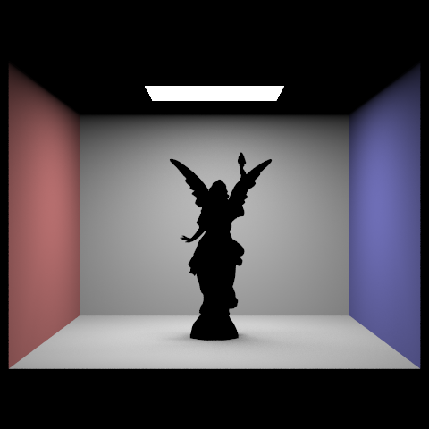

CS 184: Computer Graphics and Imaging, Spring 2023
Project 3-1: Path Tracer
Yifan Yin & Jared Basilio
Website URL: TODO
 Results Caption: my bunny is the bounciest bunny
Results Caption: my bunny is the bounciest bunny
|
Overview
YOUR RESPONSE GOES HERE
Part 1: Ray Generation and Scene Intersection (20 Points)
Walk through the ray generation and primitive intersection parts of the rendering pipeline.
Ray Generation
Ray generation first requires translating the provided normalize image coordinates
from image space to camera space.
We do this by subtracting each coordinate by \(0.5 \) then multiplying the \(x \) coordinate by
\(\tan {\frac{hFov}{2}} \) and then multiplying the \(y \) coordinate by \(\tan {\frac{vFov}{2}} \). We reduce
our coordinates to get the center of the grid square.
Given these transformed coordinates, we can turn this into the direction of the ray in camera space
where the \(z \) value is initially \(-1 \). Multiply this direction by the camera-to-world rotation matrix
(c2w in camera.h) and create a Ray object using the current position of the camera and
unit vector of our new 3D object. Set the bounds of our ray (min_t, max_t) to our clipping planes
nClip and fClip.
We then uniformly sample from the provided pixel coordinate num_samples times, each time generating a ray adding
the estimated radiance given the est_radiance_global_illumination function to the overall radiance. We use a
MC estimator that is the radiance per sample and update our pixel in our sample buffer with this value. Set the sample count buffer at \(x + y * width \) to the number of samples.
Primitive intersections
We now need to check if any triangles or spheres in the space intersect the ray to apply some seperate value and not have the ray pass through the object.
Triangle Intersections
We implement the has_intersection function that takes in a ray \(r \) an returns a boolean if that ray intersects a triangle.
This calculates a multitude of values listed below:
\[t = \frac{((\text ray \space \text origin - p_1) \times (p_2 - p_1)) \cdot (p_3 - p_1)}{(\text ray \space \text direction \times (p_3 - p_1)) \cdot (p_2 - p_1)} \]
\[b_1 = \frac{(\text ray \space \text direction \times (p_3 - p_1)) \cdot (\text ray \space \text origin - p_1)}{(\text ray \space \text direction \times (p_3 - p_1)) \cdot (p_2 - p_1)} \]
\[b_2 = \frac{(\text ray \space \text origin \times (p_2 - p_1)) \cdot \text ray \space \text direction}{(\text ray \space \text direction \times (p_3 - p_1)) \cdot (p_2 - p_1)} \]
\[b_0 = 1 - b_1 - b_2 \]
where \(p \) are the vertices off the triangle. These values derive from the Möller–Trumbore intersection algorithm. If the \(t \) value
is not within bounds of the ray or the values of \(b \) are outside the range \([0,1] \) we return false.
The intersection function sets our max_t of the ray to this \(t \) value if it does not intersect. Additionally an intersection object is
set such that the \(t \) value is the found \(t \) value, the normal at point of intersection is unit vector of the weighted sum of \(b \) values, the primitive is the triangle, and the bsdf is found.
Sphere Intersections
Since the triangle intersection logic requires vertices (not a sphere technically does not have), we utilize a different logic
that utilizes the minimum and maximum \(t \) values of the ray. We calculate the following:
\[a = \text ray \space \text direction \cdot \text ray \space \text direction\]
\[b = 2*((\text ray \space \text origin - \text sphere \space \text origin) \cdot \text ray \space \text direction)\]
\[c = (\text ray \space \text origin - \text sphere \space \text origin) \cdot (\text ray \space \text origin - \text sphere \space \text origin) - \text minimum \space \text t\]
\[\Delta = b^2 - 4ac\]
We can think of these formulas as the a,b, an c in the quadratic formula.
If \(\Delta \) is equal to 0, there is no + or - in the quadratic formula, our ray is tangent to the sphere and there is only one intersection. We can just see if the resulting quadratic formula value \(t \)
is within our bounds. If it is we set the minimum t to this value and return saying it does intersect. If the \(\Delta \) is greater
than 0 we account for two solutions to quadratic formula and see if either of them are within our bounds. If they are we set the minimum t to this value.
Otherwise the ray does not intersect since in the quadratic formula this would be imaginary.
intersect does this check again and sets the values of max_t of the ray to the minimum value, sets \(t \) to \(t_1 \),
sets \(n \) to the unit vector of \(\text ray \space \text origin + (\text minimum \space \text t)* \text ray \space \text direction - \text sphere \space \text origin\) and the bsdf.
Explain the triangle intersection algorithm you implemented in your own words.
The Moller Trumbore Algorithm is the driving algorithm we used for our implementation. It starts by finding two vectors that represent two sides of the triangle, then calculates a
perpendicular vector to the ray and one of the triangle's sides. By using some math, it checks if the
ray and the triangle are likely to intersect, and if they're not parallel, it finds where they cross paths.
Next, it ensures that this intersection point is actually inside the triangle. Finally, it confirms that this
intersection point is in front of the ray's starting point.
Show images with normal shading for a few small .dae files.
 CBBunny.dae
CBBunny.dae
|
 CBcoil.dae
CBcoil.dae
|
 CBdragon.dae
CBdragon.dae
|
 Cbspheres.dae
Cbspheres.dae
|
Part 2: Bounding Volume Hierarchy (20 Points)
Walk through your BVH construction algorithm. Explain the heuristic you chose for picking the splitting point.
YOUR RESPONSE GOES HERE
Show images with normal shading for a few large .dae files that you can only render with BVH acceleration.
 beetle.dae
beetle.dae
|
 cow.dae
cow.dae
|
 peter.dae
peter.dae
|
 teapot.dae
teapot.dae
|
Compare rendering times on a few scenes with moderately complex geometries with and without BVH acceleration. Present your results in a one-paragraph analysis.
YOUR RESPONSE GOES HERE
Part 3: Direct Illumination (20 Points)
Walk through both implementations of the direct lighting function.
We First Implemented the f function to return the reflectance given the \(w_o \) and \(w_1 \) sources.
After We implemnted the sample_f function to set \(w_1 \) given the pdf and \(w_o \) and using the f function
we used before.
Show some images rendered with both implementations of the direct lighting function.
|
Uniform Hemisphere Sampling
|
Light Sampling
|
|

CBlucy.dae
|
 bench.dae
bench.dae
|
|
bench.dae
|
CBlucy.dae
|
Focus on one particular scene with at least one area light and compare the noise levels in soft shadows when rendering with 1, 4, 16, and 64 light rays (the -l flag) and with 1 sample per pixel (the -s flag) using light sampling, not uniform hemisphere sampling.
 1 Light Ray (example1.dae)
1 Light Ray (example1.dae)
|
4 Light Rays (example1.dae)
|
|
16 Light Rays (example1.dae)
|
64 Light Rays (example1.dae)
|
YOUR EXPLANATION GOES HERE
Compare the results between uniform hemisphere sampling and lighting sampling in a one-paragraph analysis.
YOUR RESPONSE GOES HERE
Part 4: Global Illumination (20 Points)
Walk through your implementation of the indirect lighting function.
YOUR RESPONSE GOES HERE
Show some images rendered with global (direct and indirect) illumination. Use 1024 samples per pixel.
|
example1.dae
|
example2.dae
|
Pick one scene and compare rendered views first with only direct illumination, then only indirect illumination. Use 1024 samples per pixel. (You will have to edit PathTracer::at_least_one_bounce_radiance(...) in your code to generate these views.)
|
Only direct illumination (example1.dae)
|
Only indirect illumination (example1.dae)
|
YOUR EXPLANATION GOES HERE
For CBbunny.dae, compare rendered views with max_ray_depth set to 0, 1, 2, 3, and 100 (the -m flag). Use 1024 samples per pixel.
|
max_ray_depth = 0 (CBbunny.dae)
|
max_ray_depth = 1 (CBbunny.dae)
|
|
max_ray_depth = 2 (CBbunny.dae)
|
max_ray_depth = 3 (CBbunny.dae)
|
|
max_ray_depth = 100 (CBbunny.dae)
|
YOUR EXPLANATION GOES HERE
Pick one scene and compare rendered views with various sample-per-pixel rates, including at least 1, 2, 4, 8, 16, 64, and 1024. Use 4 light rays.
|
1 sample per pixel (example1.dae)
|
2 samples per pixel (example1.dae)
|
|
4 samples per pixel (example1.dae)
|
8 samples per pixel (example1.dae)
|
|
16 samples per pixel (example1.dae)
|
64 samples per pixel (example1.dae)
|
|
1024 samples per pixel (example1.dae)
|
YOUR EXPLANATION GOES HERE
Part 5: Adaptive Sampling (20 Points)
Explain adaptive sampling. Walk through your implementation of the adaptive sampling.
YOUR RESPONSE GOES HERE
Pick two scenes and render them with at least 2048 samples per pixel. Show a good sampling rate image with clearly visible differences in sampling rate over various regions and pixels. Include both your sample rate image, which shows your how your adaptive sampling changes depending on which part of the image you are rendering, and your noise-free rendered result. Use 1 sample per light and at least 5 for max ray depth.
|
Rendered image (example1.dae)
|
Sample rate image (example1.dae)
|
|
Rendered image (example2.dae)
|
Sample rate image (example2.dae)
|